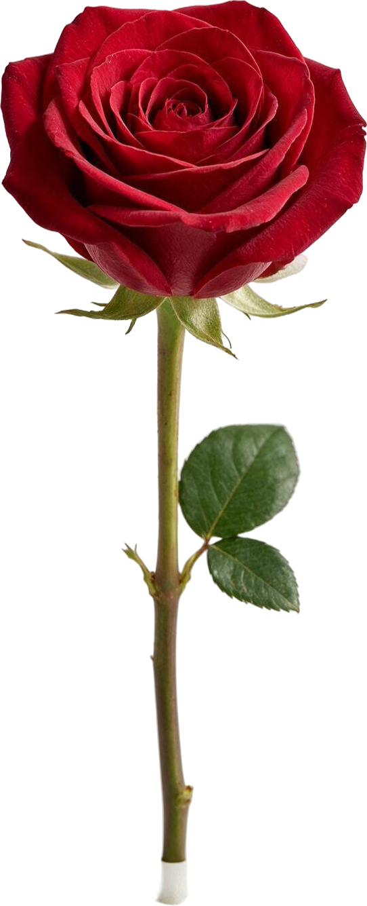
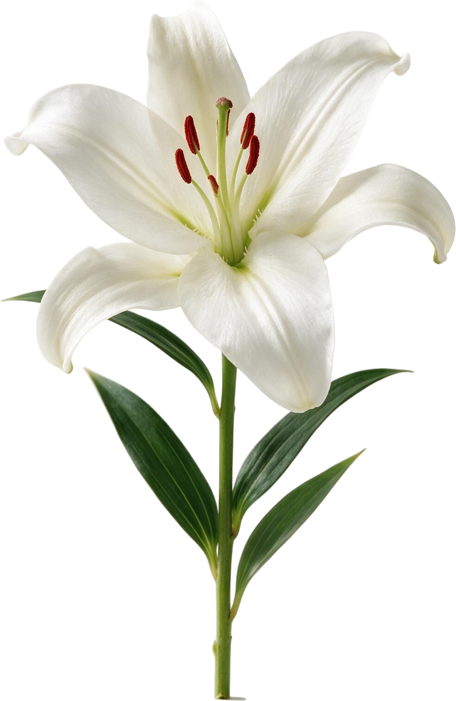
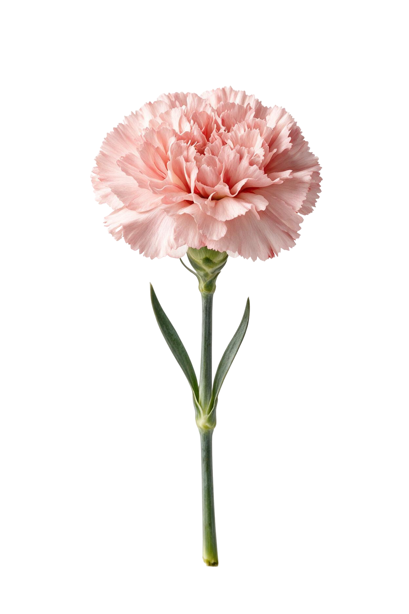
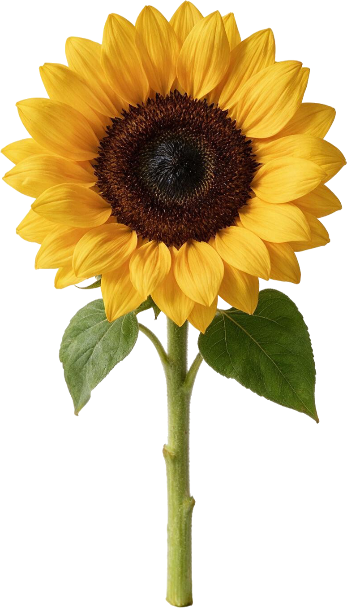
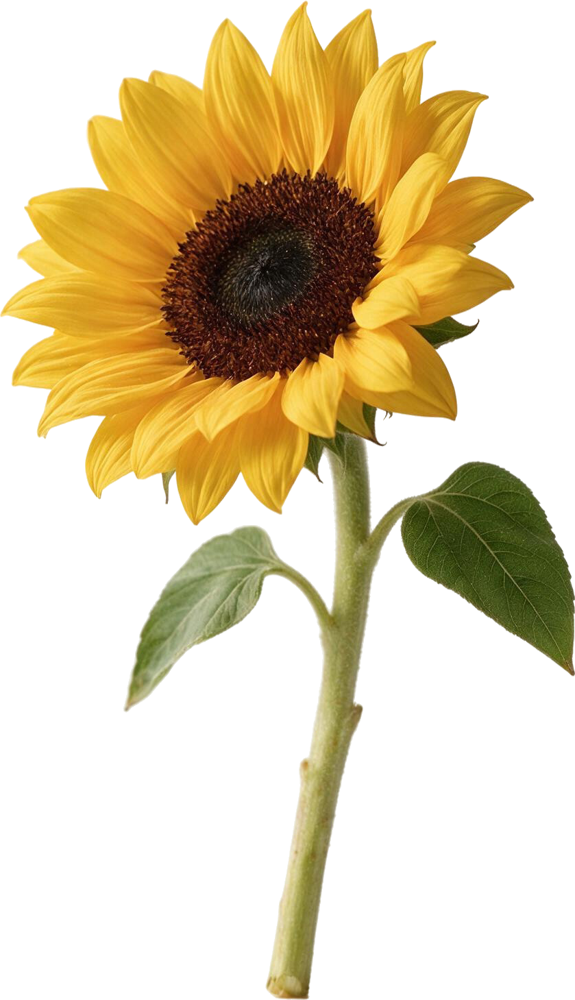
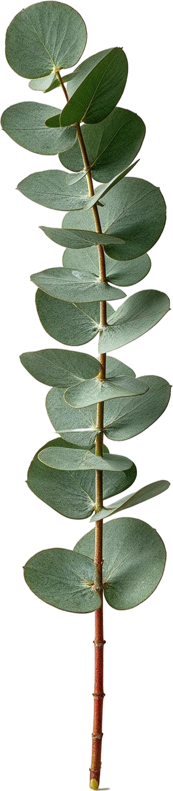
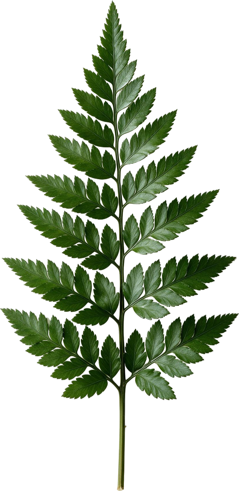
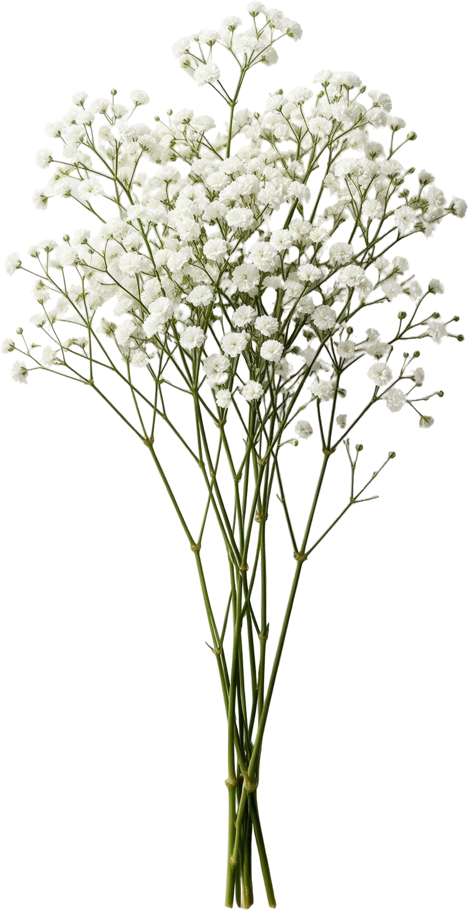

Sprite review
Every catalog variant with the measurements derive-anchors found. The gold crosshair is the anchor — the cut end of the stem, pinned to the tie point. The sage line is the middle of the bloom, which is what the renderer slides onto the spiral. Generated from data/catalog.json.
28/28 variants have artwork · generated 2026-09-06 08:52 UTC
To scale canvas 400 mm across

Red Rose

White Lily

Pink Carnation

Sunflower

Small Sunflower

Silver Dollar Eucalyptus

Leatherleaf Fern

Baby's Breath
Red Rose
id rose-red
width 75 mm
bloom 75 mm
stem 148 mm visible
price ₹45
rose-red-front.png front
anchor 257, 1334 (0.4742, 0.9993)
head row 181 → 160 mm of stem
image 542 × 1335 100% content — cropped
drawn 169 × 416 px at 75 mm
rose-red-three-quarter.png 3q
anchor 249, 1332 (0.4586, 0.9992)
head row 184 → 159 mm of stem
image 543 × 1333 100% content — cropped
drawn 169 × 414 px at 75 mm
rose-red-side.png side
anchor 194, 1346 (0.3566, 0.9993)
head row 266 → 149 mm of stem
image 544 × 1347 100% content — cropped
drawn 169 × 418 px at 75 mm
rose-red-bud.png bud
anchor 210, 1313 (0.4941, 0.9992)
head row 258 → 104 mm of stem
image 425 × 1314 100% content — cropped
drawn 95 × 292 px at 42 mm (pose override)
White Lily
id lily-white
width 150 mm
bloom 150 mm
stem 150 mm visible
price ₹90
lily-white-front.png front
anchor 515, 1510 (0.5234, 0.9993)
head row 562 → 145 mm of stem
image 984 × 1511 100% content — cropped
drawn 338 × 518 px at 150 mm
lily-white-three-quarter.png 3q
anchor 412, 1277 (0.4435, 0.9992)
head row 442 → 135 mm of stem
image 929 × 1278 100% content — cropped
drawn 338 × 464 px at 150 mm
lily-white-side.png side
anchor 364, 1433 (0.4349, 0.9993)
head row 500 → 167 mm of stem
image 837 × 1434 100% content — cropped
drawn 338 × 578 px at 150 mm
lily-white-bud.png bud
anchor 426, 1449 (0.5108, 0.9993)
head row 531 → 68 mm of stem
image 834 × 1450 100% content — cropped
drawn 140 × 243 px at 62 mm (pose override)
Pink Carnation
id carnation-pink
width 65 mm
bloom 65 mm
stem 144 mm visible
price ₹30
carnation-pink-front.png front
anchor 379, 1468 (0.5331, 0.9993)
head row 288 → 108 mm of stem
image 711 × 1469 100% content — cropped
drawn 146 × 302 px at 65 mm
carnation-pink-three-quarter.png 3q
anchor 134, 1407 (0.2393, 0.9993)
head row 276 → 131 mm of stem
image 560 × 1408 100% content — cropped
drawn 146 × 368 px at 65 mm
carnation-pink-side.png side
anchor 235, 1277 (0.4545, 0.9992)
head row 201 → 135 mm of stem
image 517 × 1278 100% content — cropped
drawn 146 × 362 px at 65 mm
carnation-pink-bud.png bud
anchor 222, 1409 (0.5441, 0.9993)
head row 634 → 65 mm of stem
image 408 × 1410 100% content — cropped
drawn 77 × 264 px at 34 mm (pose override)
Sunflower
id sunflower
width 180 mm
bloom 180 mm
stem 156 mm visible
price ₹65
sunflower-front.png front
anchor 401, 1354 (0.5174, 0.9993)
head row 338 → 236 mm of stem
image 775 × 1355 100% content — cropped
drawn 405 × 708 px at 180 mm
sunflower-three-quarter.png 3q
anchor 399, 1267 (0.5236, 0.9992)
head row 558 → 167 mm of stem
image 762 × 1268 100% content — cropped
drawn 405 × 674 px at 180 mm
sunflower-side.png side
anchor 356, 1497 (0.3956, 0.9993)
head row 670 → 165 mm of stem
image 900 × 1498 100% content — cropped
drawn 405 × 674 px at 180 mm
Small Sunflower
id sunflower-small
width 120 mm
bloom 120 mm
stem 152 mm visible
price ₹45
sunflower-small-three-quarter.png 3q
anchor 434, 1458 (0.5173, 0.9993)
head row 291 → 167 mm of stem
image 839 × 1459 100% content — cropped
drawn 270 × 470 px at 120 mm
Silver Dollar Eucalyptus
id eucalyptus-silver
width 120 mm
bloom 32 mm
stem 175 mm visible
price ₹20
eucalyptus-silver-upright.png upright
anchor 200, 1626 (0.5602, 0.9994)
head row 265 → 297 mm of stem
image 357 × 1627 100% content — cropped
drawn 176 × 800 px at 78 mm (pose override)
eucalyptus-silver-arch-left.png arch-left
anchor 584, 1608 (0.8862, 0.9994)
head row 236 → 312 mm of stem
image 659 × 1609 100% content — cropped
drawn 338 × 824 px at 150 mm (pose override)
eucalyptus-silver-arch-right.png arch-right
anchor 161, 1765 (0.2496, 0.9994)
head row 255 → 346 mm of stem
image 645 × 1766 100% content — cropped
drawn 333 × 912 px at 148 mm (pose override)
eucalyptus-silver-sprig.png sprig
anchor 171, 1157 (0.3638, 0.9991)
head row 604 → 115 mm of stem
image 470 × 1158 100% content — cropped
drawn 221 × 543 px at 98 mm (pose override)
Leatherleaf Fern
id fern-leatherleaf
width 150 mm
bloom 28 mm
stem 165 mm visible
price ₹18
fern-leatherleaf-upright.png upright
anchor 411, 1680 (0.5012, 0.9994)
head row 883 → 141 mm of stem
image 820 × 1681 100% content — cropped
drawn 326 × 669 px at 145 mm (pose override)
fern-leatherleaf-arch-left.png arch-left
anchor 546, 1523 (0.5858, 0.9993)
head row 859 → 113 mm of stem
image 932 × 1524 100% content — cropped
drawn 356 × 581 px at 158 mm (pose override)
fern-leatherleaf-arch-right.png arch-right
anchor 141, 1287 (0.1480, 0.9992)
head row 637 → 113 mm of stem
image 953 × 1288 100% content — cropped
drawn 371 × 502 px at 165 mm (pose override)
fern-leatherleaf-sprig.png sprig
anchor 416, 1580 (0.5207, 0.9994)
head row 862 → 126 mm of stem
image 799 × 1581 100% content — cropped
drawn 315 × 623 px at 140 mm (pose override)
Baby's Breath
id babysbreath
width 170 mm
bloom 8 mm
stem 170 mm visible
price ₹25
babysbreath-upright.png upright
anchor 438, 1621 (0.5252, 0.9994)
head row 605 → 213 mm of stem
image 834 × 1622 100% content — cropped
drawn 394 × 766 px at 175 mm (pose override)
babysbreath-arch-left.png arch-left
anchor 644, 1455 (0.7310, 0.9993)
head row 588 → 162 mm of stem
image 881 × 1456 100% content — cropped
drawn 371 × 614 px at 165 mm (pose override)
babysbreath-arch-right.png arch-right
anchor 257, 1697 (0.2772, 0.9994)
head row 765 → 173 mm of stem
image 927 × 1698 100% content — cropped
drawn 387 × 709 px at 172 mm (pose override)
babysbreath-sprig.png sprig
anchor 133, 1084 (0.1529, 0.9991)
head row 386 → 103 mm of stem
image 870 × 1085 100% content — cropped
drawn 288 × 359 px at 128 mm (pose override)